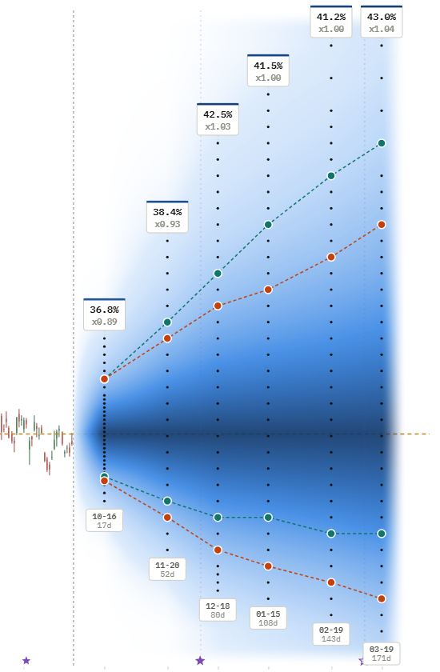
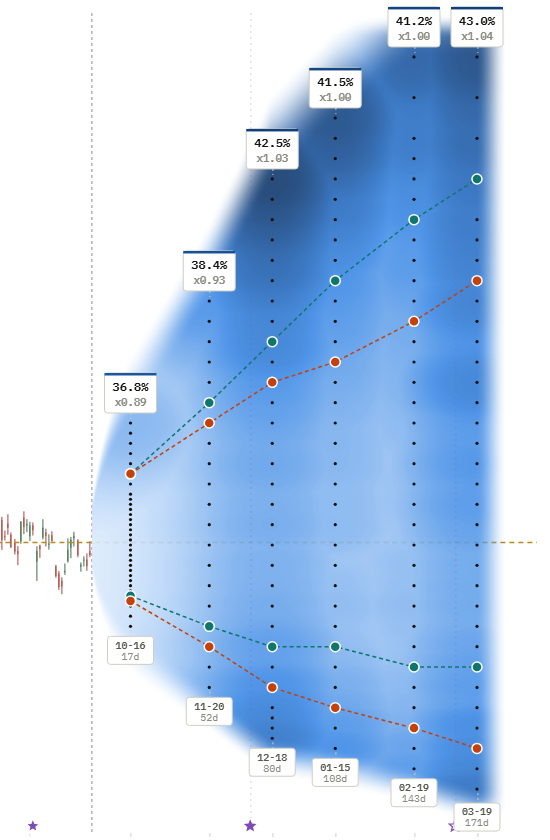
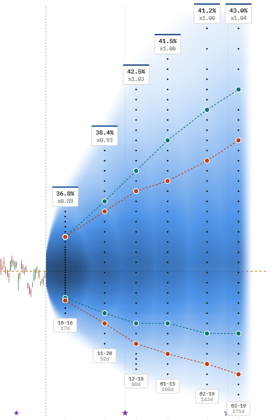
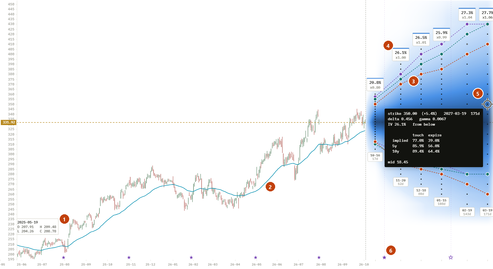
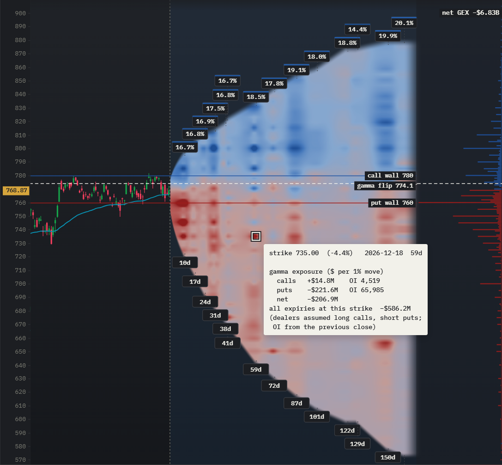

Probability, premium and positioning heatmaps for any stock with options.
OptionsCone turns the option chain into heatmaps on the price chart: touch and expiry probabilities, implied volatility, open interest, spreads and time value, for free. Pro adds the stock's own realized odds, made forward-looking, the expected value of every short option at expiration, and how much it can cost you for the premium you collect. For option traders and for anyone who holds stocks. Free and Pro version, for Windows.





What you see
Option chain heatmaps on the price chart
The cone
Every dot is a listed contract. The color behind it is the probability that the price touches that strike before that expiry: dark near the money, fading to pale where a touch becomes unlikely. The cone widens with time because the price has longer to travel.
Three models
Implied: from the option prices, with each contract's own volatility.
10y: industry-standard probability models built on the stock's realized moves of the last ten years. Pro
Adaptive: builds on these models and adds what history misses: today's conditions, the events ahead and how the stock typically responds to them. Pro
Both realized models are tested against what actually happened (see the results).
Contour lines
Pick a probability and each model draws a line through the listed strikes that match it at every expiry, above and below spot. Where the lines separate, the market and the stock's realized moves disagree.


- Candle readout. Open, high, low and close of the day under the pointer.
- Price chart tools. Two moving averages, trend and horizontal lines, daily or weekly candles, ten years of history.
- Contour lines. The strikes that match your chosen probability at every expiry, one line per model.
- Expiry badges. The implied volatility of each expiry, and how it compares with the stock's realized volatility.
- Selected contract. Click a dot and its tooltip stays open: delta, gamma, implied volatility, touch and expire probabilities from the option market and, with Pro, from the realized odds.
- Earnings dates. Filled where confirmed, hollow where projected; an expiry that spans a report prices a different risk.
What it is for
Not only for option traders
Option prices contain the market's view of how likely future stock prices are. OptionsCone turns that view, and the stock's own history, into plain probabilities you can use whether or not you ever trade an option.
Build realistic scenarios
- How far can the stock plausibly move by a given date, up and down?
- What are the chances my price target or my break-even is reached?
- How much does the market price around the next earnings date?
Manage risk at entry
- How likely is a stop level to be hit during my holding period?
- Where are large positions sitting, and are the quotes tight enough to trade?
- Is there an earnings date inside my horizon?
Identify opportunities Pro
- Where does the market price in a higher probability than the stock realized?
- What is a short option worth at expiration, measured against its premium?
- How much can a short option cost me, on average and in the bad cases, for the premium I collect?
- Where could dealer hedging slow down or speed up a move?
See worked examples with real numbers or read the guides. The app shows probabilities, not recommendations.
The approach
Every short option carries risk.
It deserves due diligence.
Most tools show you the numbers. OptionsCone puts them in context, contract by contract: what the market prices, what the stock itself supports, and what selling is worth.
Each download pulls the full option chain and the stock's price history, checks every quote and solves each contract's volatility with a model for American options that accounts for dividends. Impossible quotes are removed and doubtful ones flagged, and a data quality report shows how many passed. Nothing is hidden behind a score.
For a single download of SPY, that means more than 3,000 contracts and ten years of price history, around 37,000 quality checks and more than 118,000 figures behind the cone. That takes a moment, and it should.
OptionsCone is made for decisions that take more than a glance: which option to sell, at which strike and expiry, and whether the premium is worth the risk.
contracts in a single download of SPY
quality checks on the quotes
figures behind the cone
calculations behind the realized odds
SPY, download of 9 November 2026. Figures and calculations with Pro.
Get started
Three steps
- Download
OptionsCone-Setup.exeand run it. It installs in a few seconds. If Windows warns about an unknown app, click More info, then Run anyway. - Type a ticker, for example
AAPL, and press download. The first download takes up to a minute: OptionsCone checks every quote and reads the stock's history before it draws anything. - Read the cone. Set the probability you care about and compare the three lines. The manual explains every control.
Pro
GEX heatmap
Gamma exposure on the price chart, for every strike and expiry: where dealer hedging tends to slow moves down, where it can speed them up, and the levels where that could change. With the call wall, the put wall and the gamma flip.


Accuracy
Built to be tested
We checked the adaptive model against what actually happened, on rolling test dates from 2016 to 2026: 448 S&P 500 stocks, 12 ETFs, gold and silver, terms from two weeks to six months. On each date the models only saw the data known that day.
points average miss between predicted and real rates at expiry. For touch: 0.73
of real closing prices ended inside the 90% range
closer than the textbook formula. For touch: 3.4×
Adaptive model, 448 stocks, 50,663 test dates. ETFs (SPY, QQQ, IWM and the sector ETFs XLB, XLE, XLF, XLI, XLK, XLP, XLU, XLV, XLY): 0.66 points at expiry, 1.09 for touch, 90.3% inside the range. Gold and silver (GLD, SLV): 1.33 and 2.18 points, 90.2%. All figures are the raw test results, without statistical corrections.
See the summary
Each cell in the grid is one kind of strike. The darker the red, the larger the miss. A plus means the model said too high, a minus too low. The textbook formula misses by up to 14 points, for strikes near the price six months out. The adaptive model stays within 3 points in every cell.
Average miss
Predicted vs real rate, in percentage points. Shorter is better.
Where each model is too high or too low
448 stocks, said minus happened, in points.
On every test date, both models predicted the chances for the same strikes: calls and puts at four distances from the price, for terms from two weeks to six months. That makes more than two million predictions for the stocks alone, each one compared with what the stock actually did. The textbook formula is the random walk at today's volatility, without an expected return, the same kind of formula many brokers use for their probability figures.
Limitations. For gold and silver the miss is larger than for stocks, though still below the textbook formula, mainly because calls came out too low. ETF puts from two to six months were rated slightly too high. The stocks are today's S&P 500 members, which rose more after each test date than the average stock at the time. That favors a model that expects some rise over the textbook formula, which expects none. The ETFs have no such bias and show the same picture. The test covers 2016 to 2026, with the 2020 crash and the 2022 bear market, but no crisis like 2008. All misses are raw values and include the random noise of any finite sample.
Pro version
Pro version: for the decisions where option prices alone are not enough
Everything in the free version, plus the realized odds that weigh option prices against how each stock actually moves, what a short option is worth and what it can cost, the gamma exposure map, and every new function as it comes.
Models
Realized odds 10y and adaptive
10y: industry-standard probability models built on the stock's realized moves of the last ten years. Adaptive: builds on these models and adds what history misses: today's conditions, the events ahead and how the stock typically responds to them.
Map
Gamma exposure (GEX)
See where dealer hedging can slow down or speed up moves, with the levels where that could change.
Map
Implied vs realized
The whole cone colored by where options price in more or less movement than the stock itself supports, so the differences stand out at a glance.
Map
Expected value
What a short option is worth at expiration, on average, as a share of its premium. Shown only where our backtest found the figure reliable.
Maps
Average and tail risk per premium
What a short option can cost you at expiration, on average and in the bad cases, measured against the premium you collect.
Updates and support
Regular updates and direct support
Every new tool comes to Pro at no extra cost, and the app installs it with one click. Questions go straight to the developer.
Get Pro today
The subscription renews automatically every month or year. You can cancel any time, and Pro keeps working until the end of the paid period. Prices include sales tax or VAT. The checkout shows the amount in your currency before you pay. One key runs on up to two of your own computers. See the terms of sale.
From purchase to Pro in a minute
- Buy monthly or yearly. The payment runs through Stripe's secure checkout, and you receive your license key right after.
- In OptionsCone, click Get Pro, paste the key and press Activate and install Pro. Pro downloads and installs itself, and your tickers and settings are kept.
- Manage it in the app. Under Pro, Manage subscription lets you switch plans, change your card or cancel.
Don't have OptionsCone yet? Download the free version first, it takes a few seconds to install.
Questions
Frequently asked
What is the probability of touch?
The probability that the stock price reaches a given strike at any time before expiry, even if it moves away again afterwards. It is always at least as high as the probability of finishing beyond the strike, and often about twice as high.
Do I need to trade options to use it?
No. The option market is only the source of one of the three views. If you hold stocks, the same chart tells you how likely a stop level, a price target or your break-even is to be reached within a given time, by the market's pricing and by the stock's own history. See the use cases.
What is the difference between the implied and the realized odds?
The implied odds come from option prices, so they reflect what the market charges for the risk today. The realized odds come from the stock's own moves. 10y uses industry-standard probability models built on the stock's realized moves of the last ten years. Adaptive builds on these models and adds what history misses: today's conditions, the events ahead and how the stock typically responds to them. This lets you compare the market's expectations with the realized moves of each individual stock. Where the two differ, the option market is pricing a move the history did not produce, or the other way round.
Can I see the numbers behind the colors?
Yes. The data table lists whatever the cone shows, strike by expiry, for the contracts that are actually listed. Switch it to delta to compare a whole chain with your broker at once. The Methods section explains what every number means.
Is OptionsCone free?
Yes. The probability cone and the implied volatility, open interest, spread and time value maps are free. Pro adds the realized odds, implied vs realized, the expected value and risk maps for sellers, and the gamma exposure map (GEX). See OptionsCone Pro for prices.
Why does a chart show older data in the evening?
Option prices are only meaningful while the US market is open. Outside trading hours, the app shows your most recent download from the trading session, with its date. If a ticker has never been downloaded during trading hours, the app tells you so: download it again between 9:30 and 16:00 New York time, usually 15:30 to 22:00 in Central Europe.
Does the app send my data anywhere?
No. Everything you download stays in a folder on your computer. The app only asks our server whether a newer version is out, and Pro checks its license there. Both send just the version, an anonymous computer ID and, for Pro, your key, never any of your data. The privacy notice has the details.
Why does Windows show a warning when I start it?
The executable is not code-signed, which costs money every year. SmartScreen warns about any unsigned program it has not seen often. Click More info, then Run anyway. Each release lists a SHA-256 checksum of the file, so you can check that it was not altered.
Does it run on Mac or Linux?
Not yet. OptionsCone is available for Windows 10 and 11.
Is this financial advice?
No. All probabilities are estimates from market prices or from the past. They are not forecasts, and the data can be delayed, incomplete or wrong.